Melatonin
IBS symptoms eased, pooled from 7 trials


19 short trials in adults with untreated high blood pressure.

IBS symptoms eased, pooled from 7 trials
In type 2 diabetes, a very small drop in body fat
No effect on fibroids in a 6-month trial

Blood pressure down about 5 points on average, in 19 short trials
IBS symptoms eased, pooled from 7 trials
In type 2 diabetes, a very small drop in body fat
No effect on fibroids in a 6-month trial
19 short trials in adults with untreated high blood pressure. Four more findings in the thread.
Potassium